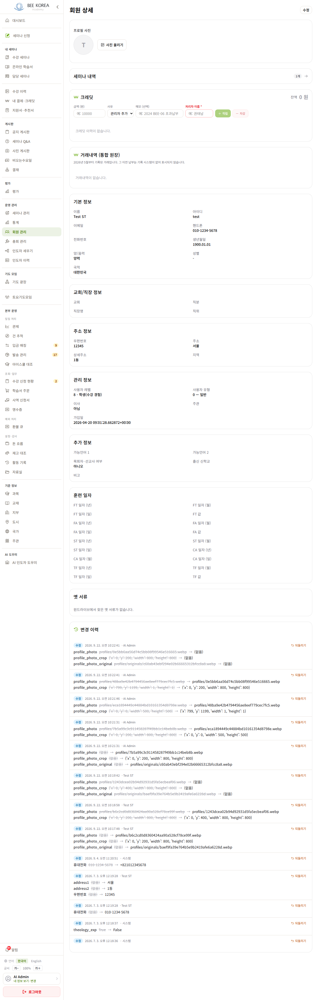
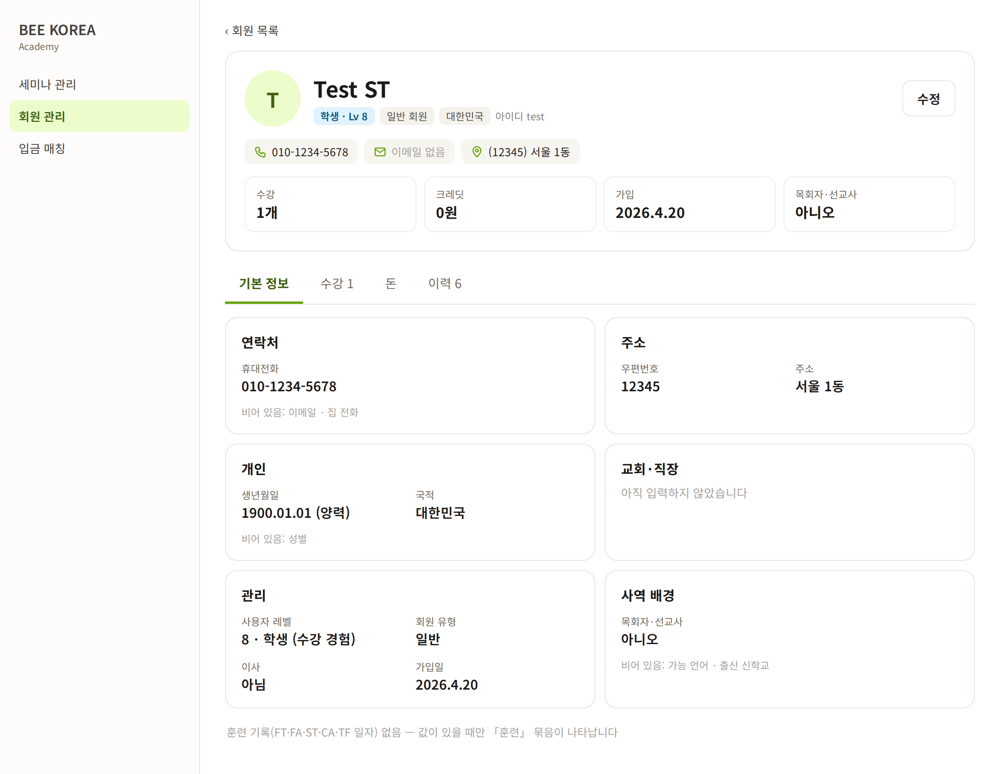
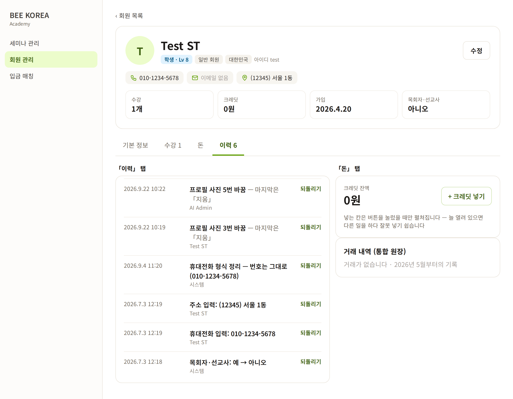
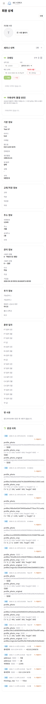
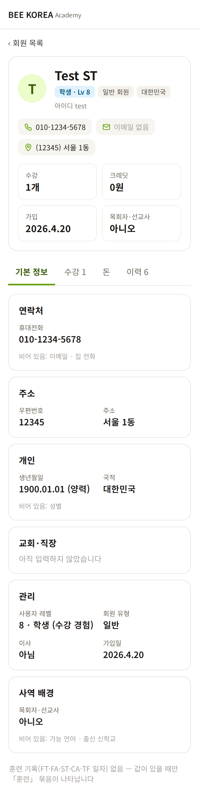

LMS 회원 상세 — 디자인 시안 1차
2026-10-11 · 본부가 매일 보는 화면 · 시험 계정(Test ST)의 실제 데이터로 그렸습니다(실제 회원 정보는 이 페이지에 올리지 않습니다) · 아직 적용 전
무엇이 바뀌나
- 맨 위 요약 카드 — 사진·이름·레벨·회원 유형·국적 + 전화·이메일·주소 + 수강 수·크레딧·가입일·목회자 여부. 「이 사람이 누구인가」가 첫 화면에
- 탭 4개 — 기본 정보 · 수강 · 돈 · 이력. 지금은 4,020px(휴대폰 5,876px)를 한 줄로 내려야 했다
- 관련된 것끼리 카드 — 연락처 · 주소 · 개인 · 교회·직장 · 관리 · 사역 배경. 이름표 작게, 값 굵게
- 빈 칸 정리 — 값이 있는 칸만 크게, 빈 칸은 「비어 있음: 이메일 · 집 전화」 한 줄로. 옛 「훈련 일자」 16칸은 값이 있을 때만
- 기계 값 → 사람 말 — 가입일
2026-04-20 09:01:28.662872+00:00→ 2026.4.20 · 「0 — 일반」 → 일반 · 이력의profile_photo_crop {…}→ 「프로필 사진 5번 바꿈 — 마지막은 지움」 - 크레딧 넣는 칸은 접어 둠 — 「+ 크레딧 넣기」를 눌렀을 때만 펼쳐진다. 늘 열려 있으면 다른 일을 하다 잘못 넣기 쉽다
PC — 기본 정보 탭


PC — 이력 · 돈 탭

휴대폰


정해 주실 것
- 탭 4개(기본 정보 · 수강 · 돈 · 이력)로 나눠도 될까요? 어느 탭을 마지막에 봤는지 기억해 두고 다음에 그 탭으로 엽니다.
- 요약 카드의 4칸(수강 · 크레딧 · 가입 · 목회자·선교사) — 다른 걸 넣고 싶으시면 말씀해 주세요(예: 마지막 수강 · 미납).
- 옛 「훈련 일자」 16칸은 값이 있을 때만 「훈련」 묶음으로 보여도 될까요? (지우지 않고 숨기기만 합니다)
이력의 사람 말 바꾸기는 서버에서 칸 이름표를 붙이는 일도 함께 합니다(지금은 서버가 칸 이름을 그대로 내려준다).